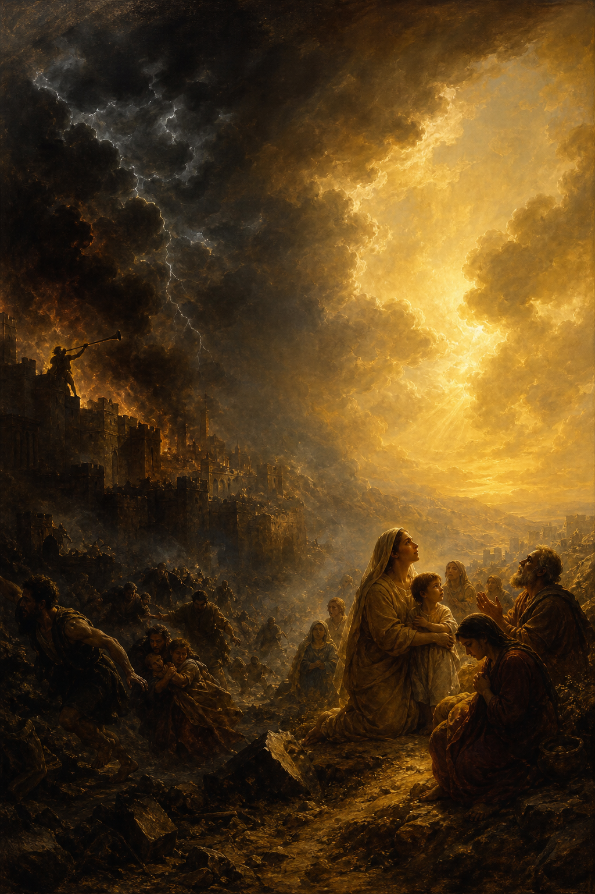

Old Testament · Book 36 of 39
Zephaniah
A trumpet blast of judgment gives way, in its final verses, to God singing over his people — the darkest day of the LORD ending in the gentlest love song in the prophets.
Zephaniah, a descendant of King Hezekiah prophesying during the reforms of Josiah, delivers one of the Bible's most sweeping pictures of the coming day of the LORD — first as an unstoppable wave of judgment, then, astonishingly, as a day when God himself rejoices over a humbled and rescued people with singing.
The LORD thy God in the midst of thee is mighty; he will save, he will rejoice over thee with joy... he will joy over thee with singing.
What happens in Zephaniah
Zephaniah opens with a declaration so total it echoes the flood: the LORD will utterly consume all things from off the land, sweeping away man and beast alike because Judah has filled itself with idolatry, violence, and indifference toward God, worshipping both the LORD and pagan gods side by side. The coming day of the LORD is described in a relentless string of images, wrath, trouble, distress, darkness, trumpet and alarm, a day against which silver and gold will be powerless. Chapter two turns outward, pronouncing judgment on the nations surrounding Judah — Philistia, Moab, Ammon, Ethiopia, and finally the proud city of Nineveh itself, which will become a desolate wasteland for wild creatures. Yet woven into the judgment is a clear invitation: seek the LORD, seek righteousness, seek humility, and perhaps you will be hidden in the day of his anger. The third chapter indicts Jerusalem's own corrupt leaders, prophets, and priests, but then pivots completely, promising a purified remnant, humble and afflicted, who will no longer be ashamed or deceitful. The book ends with the LORD himself in the midst of his people, not merely saving them but rejoicing over them with singing, gathering the outcasts, and turning their captivity before their very eyes.
Why it matters
Zephaniah compresses the whole shape of biblical prophecy into three short chapters: unflinching judgment on sin, both within the covenant community and beyond it, paired with a promise that judgment is never God's final word for those who seek him in humility. Its closing image, God rejoicing over his people with singing, offers one of the Old Testament's tenderest pictures of divine love, grounding later New Testament language about God's delight in his redeemed people.